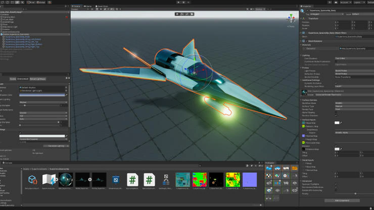
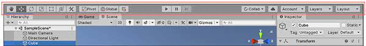
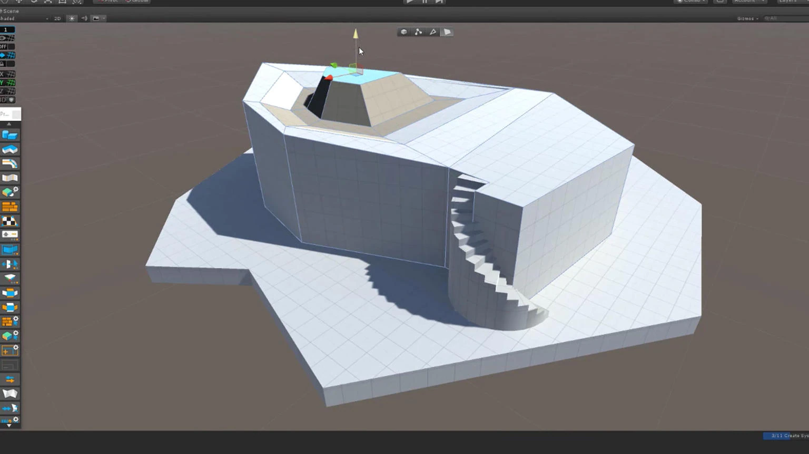

UNITY?
Es un Game Engine (Motor de Videojuegos)
Nos permite:
Crear experiencias interactivas
Renderizar en tiempo real
Manipular assets.br
Renderizado en tiempo real ->Frames por segundo
Interactividad -> Cómo el jugador le “habla” al juego
Assets -> Archivos que el juego puede usar para mostrar la experiencia.
UNITY?
Unity NO es un editor de assets Para crear Assets contamos con distintas herramientas:
Archivos 3D
Blender, Maya, SketchUp, Cinema 4D
Archivos 2D
Krita, Inkscape, Photoshop, Illustrator
Música y sonidos
Audacity, Adobe Audition, FL Studio
Archivos de código
Visual Studio, Sublime, Emacs, Vim. Unity cuenta con herramientas que se denominan Packages que son como Plugins que se instalan en Unity. ProBuilder Creación de assets 3d UnityAnimations (antes Anima2D) Creación de assets 2D
UNITY
interfaz:
Barra de herramientas:
Es una barra ubicada en la parte superior de la pantalla que ofrece acceso rápido a varias funciones, como la ejecución del proyecto, la gestión de la calidad de la escena y la manipulación de objetos en la escena.
Area de la escena:
Es la parte principal donde se crea y edita el contenido del juego, como la colocación de objetos, luces, cámaras y otros elementos.
Unity cuenta con mas
herramientas pero por el momento de estas les hablare